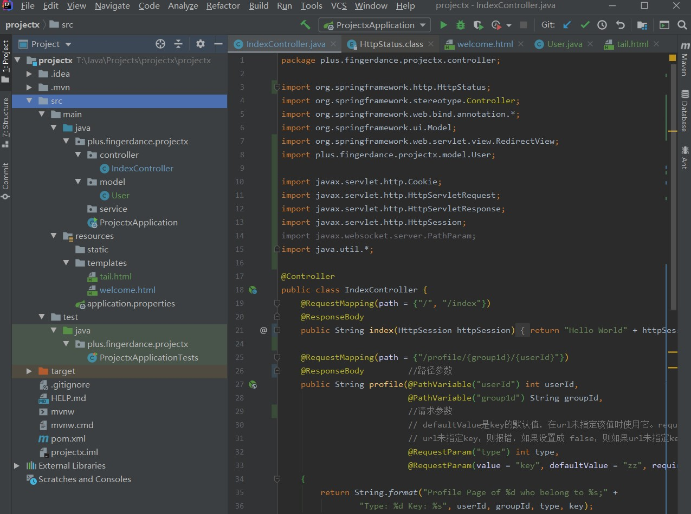

摘要：
记录Wenda项目学习过程中的一些重点。
第一章 开发工具和Java语言介绍
略
第二章 Spring入门和模板语法
2.1 项目结构

- pom文件记录了项目依赖的所有包。
当我们第一次打开项目时，会loading很久，是因为编译器正在导入pom文件中的包所依赖的其他jar包。java目录下是项目源代码。
包括处理url请求的controller、程序入口ProjectxApplicationresources目录下是项目资源文件
包括静态的css，js代码、图片文件等，这些放在static目录下。
templates目录下是项目使用的模板，写的一般是html代码。test是测试目录
2.2 一个简单demo
1 |
|
很简单的一个demo，IndexController 类通过 @Controller 注解,它实现了在访问localhost:8080/或者localhost:8080/index时返回一个 Hello World。
2.2.1 指定HTTP请求方法
1 |
|
这样在访问localhost:8080/或者localhost:8080/index时只能通过HTTP的GET方法访问，当通过其他方法访问时会报错。在处理一些只需要提交数据的情况时，我们可以指定为HTTP请求方法为POST以避免不必要的数据拉取操作。
2.2.2 HTTP METHOD
GET：获取接口信息HEAD：仅查看接口的HTTP的头POST：提交数据到服务器PUT：支持幂等性的POST。client对一个URI发送一个Entity，服务器在这个URI下如果已经有了一个Entity，那么此刻服务器应该替换成client重新提交的，也由此保证了PUT的 幂等性 。如果服务器之前没有Entity ，那么服务器就应该将client提交的放在这个URI下。DELETE：删除服务器上的资源OPTIONS：查看支持的方法
2.3 路径变量和请求参数传递
1 | (path = {"/profile/{groupId}/{userId}"}) |
profile 方法实现了当访问：
http://localhost:8080/profile/admins/001?type=1&key=add
时返回：
Profile Page of 1 who belong to admins; Type: 1 Key: add
groupId和userId这两个变量位于路径中，为 路径变量。Spring使用注解@PathVariable将路径变量解析到方法中
- url中的type和key为 请求参数。Spring使用注解
@RequestParam将url中的请求参数解析到方法中。- 注意默认值的用法：
defaultValue是参数的默认值，在url未指定该值时使用它。required标明是否需要参数，默认为是。- 请求参数的默认值不管是什么类型，写的时候都是以String 类型为注解
RequestParam提供的，例如：zz和1。
2.4 通过模板返回
注意到2.2的demo我们用@ResponseBody修饰方法时，方法会以字符串方式返回”Hello World”。可以去掉这个@ResponseBody让方法通过框架返回一个模板。
一个简单的例子：
1 | (path = {"/template"}) |
src/main/resources/templates目录中的template.html代码：
1 | <html> |
在src/main/resources/templates目录中的application.properties中添加：spring.freemarker.suffix= .html
这样可以让框架默认方法返回的模板后缀为html。注意到在注释1处是return "template";。
2.5 FreeMarker模板语法
通过Model对象的addAttribute()方法向模板传递参数。
查看Model.class的反编译文件，注意到Model类属于springMVC中ui的框架，就是那个View：package org.springframework.ui;
查看addAttribute()的反编译文件，注意到addAttribute()方法可以接收两个参数：Model addAttribute(String var1, @Nullable Object var2);
String类型变量为后端变量传递到前端时使用的变量object类型变量为后端变量
2.5.1 简单参数传递
下面是向模板传递String类型变量的代码实现：
1 | // 向welcome.html模板传递参数并且返回模板 |
同时需要在src/main/resources/templates/welcome.html中写入代码：
1 |
|
后端的String类型变量Wow!会被传递到前端，并且在前端用tValue表示。
在FreeMarker模板语法中，${}中写入后端参数即可传递参数。
以上实现了在访问http://localhost:8080/welcome时显示
Wow!
如果变量在后端中不存在则报错。在$和{}中加入任意字段则不会传递参数，全部会被当成文本解析。
2.5.2 复杂参数传递
2.5.2.1 传递List:
通过
List的toString()方法将List变量以String类型传递到前端。1
2List<String> colors = Arrays.asList("RED", "BLUE", "GREEN");
model.addAttribute("tColors1", colors.toString());同时需要在src/main/resources/templates/welcome.html中写入代码：
1
2
3
4
5
6
7<html>
<body>
<pre>
${tColors1}
</html>
</body>
</pre>它实现了在访问
http://localhost:8080/welcome时显示：[RED, BLUE, GREEN]
直接将
List对象传递给前端1
2List<String> colors = Arrays.asList("RED", "BLUE", "GREEN");
model.addAttribute("tColors2", colors);同时需要在src/main/resources/templates/welcome.html中写入代码：
1
2
3
4
5
6
7
8
9<html>
<body>
<pre>
<#list tColors2 as x>
This is color ${x?index}: ${x} ,count: ${x?counter}
</#list>
</html>
</body>
</pre>它实现了在访问
http://localhost:8080/welcome时显示：This is color 0: RED ,count: 1
This is color 1: BLUE ,count: 2
This is color 2: GREEN ,count: 3
2.5.2.2 传递Map:
一般是向模板传递map，再在模板中使用
${map?keys}循环keySet迭代器。1
2
3
4
5Map<String, String> map = new HashMap<>();
for (int i = 0; i < 4; i++) {
map.put(String.valueOf(i), String.valueOf(i*i));
}
model.addAttribute("tMap", map);同时需要在src/main/resources/templates/welcome.html中写入代码：
1
2
3<#list tMap?keys as key>
key: ${key} - value: ${tMap[key]}
</#list>它实现了在访问
http://localhost:8080/welcome时显示：key: 0 - value: 0
key: 1 - value: 1
key: 2 - value: 4
key: 3 - value: 9甚至可以直接向模板传递一个
entrySet()，接着在模板中迭代它。1
2
3
4
5Map<String, String> map = new HashMap<>();
for (int i = 0; i < 4; i++) {
map.put(String.valueOf(i), String.valueOf(i*i));
}
model.addAttribute("tEntry", map.entrySet());这里
${entry.key}是直接调用了Java对象方法。
同时需要在src/main/resources/templates/welcome.html中写入代码：1
2
3<#list tEntry as entry> <#-- ftl语言map不能get一个entry，要想循环entry set得从后端传过来 -->
key: ${entry.key} - value: ${entry.value}
</#list> <#-- 这个太神奇了 -->它也实现了在访问
http://localhost:8080/welcome时显示：key: 0 - value: 0
key: 1 - value: 1
key: 2 - value: 4
key: 3 - value: 9
2.5.2.3 传递自定义对象:
除了向模板传递List Map这类Java内置类对象外，还可以传递自定义类。
在..src\main\java\plus\fingerdance\projectx\model中创建User类：
1 | package plus.fingerdance.projectx.model; |
在Controller中加入：
1 | model.addAttribute("user", new User("ESP")); |
同时需要在src/main/resources/templates/welcome.html中写入代码：
1 | User: ${user.name} <#-- 1 --> |
它也实现了在访问http://localhost:8080/welcome时显示：
User: ESP
Description:
This is ESP
This is ESP
- 这里模板直接搜索后端Java类User中有没有类似于getxxx isxxx这类方法，接着调用它。
- 这里模板是直接调用了Java类方法。
- 同1。
2.5.3 在模板中自定义变量
除了从后端传递参数到模板之外，还可以在模板中直接定义参数。
在…src/main/resources/templates/welcome.html中写入代码：
1 | <#assign title = "NowCoder"> |
它也实现了在访问http://localhost:8080/welcome时显示：
NowCoder
2.5.4 模板的继承和引用
可以在一个模板中引用其他模板，工程中一般用于多个页面存在相同部分时。比如网站的头部和尾部，不可能每个页面都写一个头一个尾。这时我们可以单独写一个头模板一个尾模板，接着我们只需要在每个需要用到它们的地方引用它们即可。
比如我们定义一个尾模板，在…\src\main\resources\templates中新建tail.html:
1 | Copyright 2020-2025 ${title}<br> |
在…src/main/resources/templates/welcome.html中写入引用代码：
1 | <#include "tail.html"> |
模板会自动引用tail.html，然后解析其中的变量。因为上文中已经在模板中定义了变量title，所以
在访问http://localhost:8080/welcome时页面尾端显示：
Copyright 2020-2025 NowCoder
All rights reserved.
引用单独的模板文件可以提高代码的复用性，类似地，自定义宏也可以实现这一特性。
2.5.5 模板自定义宏（函数）
使用
在…src/main/resources/templates/welcome.html中写入代码：
1 | <#macro render_color index color> <#-- 1 --> |
- macro标签中指明了函数名
render_color，以及函数的两个参数index和color。- 函数体中指明了函数用法：当调用函数时，会显示这一行语句
Color Render Macro ${index}, ${color}，其中，参数会被模板解析。
函数调用：
在…src/main/resources/templates/welcome.html中写入代码：
1 | <#list tColors2 as color> |
在访问http://localhost:8080/welcome时显示：
Color Render Macro 0, RED
Color Render Macro 1, BLUE
Color Render Macro 2, GREEN
使用宏的好处就是，我可以在多个页面调用它，而不必写重复代码。
2.5.6 模板字符串拼接
1 | <#assign hello = "Hello"> |
字符串变量helloworld1拼接了变量hello和字符串" World !".其中，引号为双引号和单引号都可以。
在访问http://localhost:8080/welcome时显示：
Hello
Hello World !
2.5.7 本节项目代码
代码可能与上文略有出入，但主要体现在格式方面，不用在意这些细节。
..src\main\java\plus\fingerdance\projectx\controller\IndexController.java
1 |
|
…\src\main\resources\templates\welcome.html
1 |
|
2.6 Spring中的Request和Response对象
2.6.1 Request对象
Spring对Request和Response对象的一些参数有着很好的封装，可以通过参数方式获取：
1 | // request和respons对象 |
以上代码可以在访问http://localhost:8080/request时显示：
request.getMethod(): GET
request.getQueryString(): null
request.getPathInfo(): null
request.getRequestURI(): /request
我们还可以通过request.getHeader()获取请求头信息：
1 | for (Enumeration<String> headerNames = request.getHeaderNames();headerNames.hasMoreElements();) { |
冒号前为headerName，后面为header.sb添加了如上信息后，会在访问http://localhost:8080/request时多显示如下信息：
host: localhost:8080
connection: keep-alive
cache-control: max-age=0
upgrade-insecure-requests: 1
user-agent: Mozilla/5.0 (Windows NT 10.0; Win64; x64) AppleWebKit/537.36 (KHTML, like Gecko) Chrome/86.0.4240.198 Safari/537.36 Edg/86.0.622.69
accept: text/html,application/xhtml+xml,application/xml;q=0.9,image/webp,image/apng,/;q=0.8,application/signed-exchange;v=b3;q=0.9
sec-fetch-site: none
sec-fetch-mode: navigate
sec-fetch-user: ?1
sec-fetch-dest: document
accept-encoding: gzip, deflate, br
accept-language: zh-CN,zh;q=0.9,en;q=0.8,en-GB;q=0.7,en-US;q=0.6
cookie: Idea-510111fa=6e59ec78-c3df-46b6-9a42-f2f1d838f830; _ga=GA1.1.234834870.1604220367; _ga_23PFYL4751=GS1.1.1605340925.4.1.1605340955.0; JSESSIONID=E380D4FA65A20F296103B854C08FA844
其中,cookie可以单独读取：
1 | Cookie[] cookies = request.getCookies(); |
sb添加了如上信息后，会在访问http://localhost:8080/request时多显示如下信息：
Cookie:Idea-510111fa Value:6e59ec78-c3df-46b6-9a42-f2f1d838f830
Cookie:_ga Value:GA1.1.234834870.1604220367
Cookie:_ga_23PFYL4751 Value:GS1.1.1605340925.4.1.1605340955.0
Cookie:JSESSIONID Value:416A8479B0D9CE8C912E3B4AF710D850
cookies的构成是很多组的Cookie和对应的Value，我们甚至可以通过注解的方式，直接读取cookies中的Value值。
在方法参数中加入注解@CookieValue("JSESSIONID") String sessionId获取Cookie为JSESSIONID对应的Value值：
1 | (path = {"/request"}, method = {RequestMethod.GET}) |
这样我们就可以直接读取：
1 | //... |
sb添加了如上信息后，会在访问http://localhost:8080/request时多显示如下信息：
COOKIEVALUE:416A8479B0D9CE8C912E3B4AF710D850
2.6.2 Response对象
除了操作客户端向服务器请求的Request对象外，我们还可以操作服务器向客户端发送的Response对象。
向响应头中添加字段nowcoderID:hello:
1 | (path = {"/request"}, method = {RequestMethod.GET}) |
在操作Response对象前需要先在函数参数中声明对象。如上会在访问http://localhost:8080/request时用F12浏览器调试页面看到响应头已经包含了我们添加的字段：
nowcoderID: hello
另外我们还可以向响应头中添加cookies对象，例如，我们可以添加一组cookies：name:username, value:nowcoder。
1 | response.addCookie(new Cookie("username", "nowcoder")); |
添加后会在访问http://localhost:8080/request时用F12浏览器调试页面看到响应头中已经添加了cookies：
Set-Cookie: username=nowcoder
2.7 重定向
重定向在工业中应用广泛。比如，一个网站制作了一个PC端网页www.nowcoder.com和一个手机端网页m.nowcoder.com，当服务器通过用户的UserAgent判断用户是使用了手机访问网页时，我们就可以让它跳转到手机端的网页。这样可以很好地提高用户体验。
再比如，网站新开发了一个网页，当我们已经将网页部署上线了，但是突然需要对网页做一个更改，又不能临时将网页下线。此时我们就可以为网页做一个跳转，跳转到更改之后部署的页面去。
2.7.1 302临时跳转
我们可以使用Spring框架为网站自定义跳转：
1 | //302临时性跳转 |
函数返回一个"redirect:/"这样当我们访问：http://localhost:8080/redirect/113时（code可以是任意整型变量），就会临时性地跳转到首页。
Hello World
我们可以设置在跳转时，通过HttpSession对象传递一个消息：
1 | //302临时性跳转 |
为函数添加一个HttpSession对象作为参数，并且为该对象设置一个属性，该属性由一个String对象和一个Object对象构成。前者定义了消息的名称，后者为消息对象本身。
接着，我们给定义地首页的index方法设置一个Httpsession对象作为参数：
1 | (path = {"/", "/index"}, method = {RequestMethod.GET}) |
这样，当我们访问：http://localhost:8080/redirect/113时，会临时性地跳转到首页，并且将消息--jump from redirect传递到首页，首页会显示：
Hello World –jump from redirect
除了让方法通过返回String对象"redirect:/"的方式实现跳转之外，我们还可以让其返回RedirectView对象实现跳转：
1 | //302临时性跳转 |
以上302跳转的情况，我们事先打开浏览器F12控制台，在跳转之后会看到当前网页的网络状态码为302。
其中，Spring默认跳转状态码为 302 ，所以可以不用人为指定。
路径中的code可以是任意整型。
2.7.2 301永久性跳转
除了设置302临时性跳转之外，我们还可以设置永久性跳转。
1 | //301 permanently moved |
这里的 301 只是起到url路径的标记作用，我也可以指定其他值当访问他的时候设置301跳转。
依然是通过访问url的/request/{code}实现跳转，当我们访问的code为指定的301时，方法内部设置RedirectView的状态码为 HttpStatus.MOVED_PERMANENTLY ，这样当我们访问：http://localhost:8080/redirect/301时，会永久性地跳转到首页，并且将消息--jump from redirect传递到首页，首页会显示：
Hello World –jump from redirect
并且当前网页状态码为：301。
2.8 异常处理
工业上写网站的时候，经常会用到异常处理。比如说对于有些不存在也页面，访问的时候会显示404 page not found，这其实就是一个统一的异常处理。
看个例子：
1 | //异常处理 |
我们定义了一个admin页面，访问这个页面需要提供一个参数。当我们提供的参数为adminParameter时，即当我们访问：http://localhost:8080/admin?key=adminParameter时页面返回一个:
hello admin
否则就抛出一个异常对象:
error:参数不对
我们另外在error函数中对异常进行统一的处理。
2.9 控制反转IOC aka 依赖注入DI
2.9.1 什么是IOC or DI
IOC，控制反转（Inversion of Contro）。
软件系统在没有引入IOC容器之前，比如说对象A依赖于对象B，那么对象A在初始化或者运行到某一点的时候，自己必须主动去创建对象B或者使用已经创建的对象B。无论是创建还是使用对象B，控制权都在自己手上。
软件系统在引入IOC容器之后，这种情形就完全改变了，由于IOC容器的加入，对象A与对象B之间失去了直接联系，所以，当对象A运行到需要对象B的时候，IOC容器会主动创建一个对象B注入到对象A需要的地方。
通过前后的对比，我们不难看出来：对象A获得依赖对象B的过程,由主动行为变为了被动行为，控制权颠倒过来了，这就是 控制反转 这个名称的由来。
DI，依赖注入（Dependency Injection）。
控制被反转之后，获得依赖对象的过程由自身管理变为了由IOC容器主动注入。所以 控制反转 更合适的名字叫做 依赖注入
所以，依赖注入(DI)和控制反转(IOC)是从不同的角度的描述的同一件事情，就是指通过引入IOC容器，利用依赖关系注入的方式，实现对象之间的解耦。
2.9.2 IOC举例
在…/src/main/java/com.wenda.demo/service 包下创建新的类WendaService。
注意要想能让IOC容器在别的地方注入这个类的对象，这里一定要有注解@Service。
1 |
|
在…/src/main/java/com.wenda.demo/controller 包下创建新的类SettingController。
1 |
|
对于WendaService类，如果我们想在IndexController和SettingController两个类里同时使用，一般来说需要在两个地方各都new出来一个。
但是使用IOC的方式，我们只需在两个地方通过注解的方式让IOC容器帮我们注入进来。
在SettingController类中：
1 |
|
这样，当访问 http://localhost:8080/setting 时就会看到：
Setting OK Hello User: 233
在IndexController类中：
1 |
|
这样，当访问主页 http://localhost:8080/index 时就会看到：
Hello World. Hello User: 113
其实，不难注意到httpSession对象也是通过IOC容器注入的。
IOC的思想类似于 享元设计模式（FlyWeight） ，由一个容器统一管理所有对象，以避免大量的new操作。
1 | // m_map就看成是IOC容器 |
3.0 面向切面编程AOP
3.0.1 什么是面向切面编程
面向切面编程（AOP是Aspect Oriented Program的首字母缩写） ，我们知道，面向对象的特点是继承、多态和封装。而封装就要求将功能分散到不同的对象中去，这在软件设计中往往称为职责分配。实际上也就是说，让不同的类设计不同的方法。这样代码就分散到一个个的类中去了。这样做的好处是降低了代码的复杂程度，使类可重用。
但是人们也发现，在分散代码的同时，也增加了代码的重复性。什么意思呢？比如说，我们在两个类中，可能都需要在每个方法中做日志。按面向对象的设计方法，我们就必须在两个类的方法中都加入日志的内容。也许他们是完全相同的，但就是因为面向对象的设计让类与类之间无法联系，而不能将这些重复的代码统一起来。
也许有人会说，那好办啊，我们可以将这段代码写在一个独立的类独立的方法里，然后再在这两个类中调用。但是，这样一来，这两个类跟我们上面提到的独立的类就有耦合了，它的改变会影响这两个类。那么，有没有什么办法，能让我们在需要的时候，随意地加入代码呢？这种在运行时，动态地将代码切入到类的指定方法、指定位置上的编程思想就是面向切面的编程。
一般而言，我们管切入到指定类指定方法的代码片段称为切面，而切入到哪些类、哪些方法则叫切入点。有了AOP，我们就可以把几个类共有的代码，抽取到一个切片中，等到需要时再切入对象中去，从而改变其原有的行为。
这样看来，AOP其实只是OOP的补充而已。OOP从横向上区分出一个个的类来，而AOP则从纵向上向对象中加入特定的代码。有了AOP，OOP变得立体了。如果加上时间维度，AOP使OOP由原来的二维变为三维了，由平面变成立体了。从技术上来说，AOP基本上是通过代理机制实现的。
AOP在编程历史上可以说是里程碑式的，对OOP编程是一种十分有益的补充。
这种在运行时，动态地将代码切入到类的指定方法、指定位置上的编程思想就是面向切面的编程。
3.0.2 AOP举例
在pom.xml文件中添加相关依赖项：
1 | <!--AspectJ 开始--> |
或者直接添加aop起步依赖(starter)：
1 | <dependency> |
下面我们为 IndexController 实现切面类。
在 …/src/main/java/com.wenda.demo/ 下新建包：aspect.
在 aspect 包下新建一个log切面类 LogAspect ，并为它添加注解 @Aspect。
接下来添加注解 @Component ，和 @Service 注解相同的是，他们都是自动注册bean的。区别是后者用于标注业务层组件，前者泛指组件，当组件不好归类的时候，可以使用这个注解标注。如果不明确是不是 @Service ，只要写了 @Component ,它就会以一个组件的方式在依赖注入的时候把对象构造出来。
为 LogAspect 类添加一个logger对象和两个方法：
1 |
|
我们现在对所有访问 Index的方法做一个切面的“截获”。访问 IndexController 类的所有方法之前执行 beforeMethod() ，之后执行 afterMethod().
注意 "execution(* com.wenda.demo.controller.IndexController.*(..))"
其中，第一个 * 指返回值，第二个 * 指的是方法，后面跟的 (..) 是参数. 它描述了切面的执行条件。
那么当我们访问首页 http://localhost:8080/index 的时候，在log里就会看到：
1 | 2021-03-01 18:22:32.651 INFO 848 --- [nio-8080-exec-1] com.wenda.demo.aspect.LogAspect : Before method |
切面的好处就是，如果想对系统的性能进行关注，可以在切面方法中为logger写入时间信息，我们可以很清楚地看到访问一个首页的方法的调用情况和执行效率：
1 |
|
1 | 2021-03-01 18:28:12.814 INFO 3716 --- [nio-8080-exec-1] com.wenda.demo.aspect.LogAspect : Before methodMon Mar 01 18:28:12 CST 2021 |
因为方法执行速度太快，看得不是很明显。
现在我们使用切面的 JoinPoint 切点对象获取被切入方法的参数信息：
1 |
|
那么当我们访问：http://localhost:8080/profile/admin/112?type=1 的时候，可以在log里看到获取的参数：
1 | 2021-03-01 19:21:47.467 INFO 19320 --- [nio-8080-exec-1] com.wenda.demo.aspect.LogAspect : Before method: arg: 112|arg: admin|arg: 1|arg: zzz| |
面向切面的核心思想就是动态地将代码切入到各种业务流程中去。